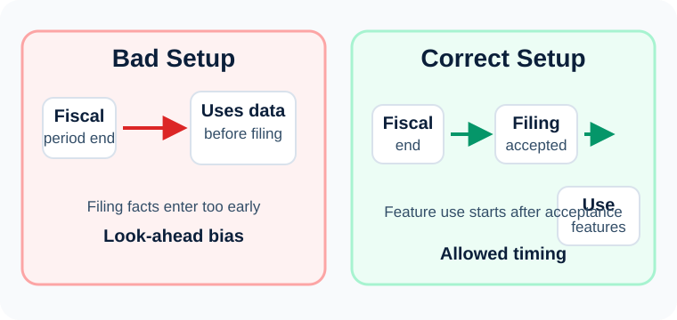
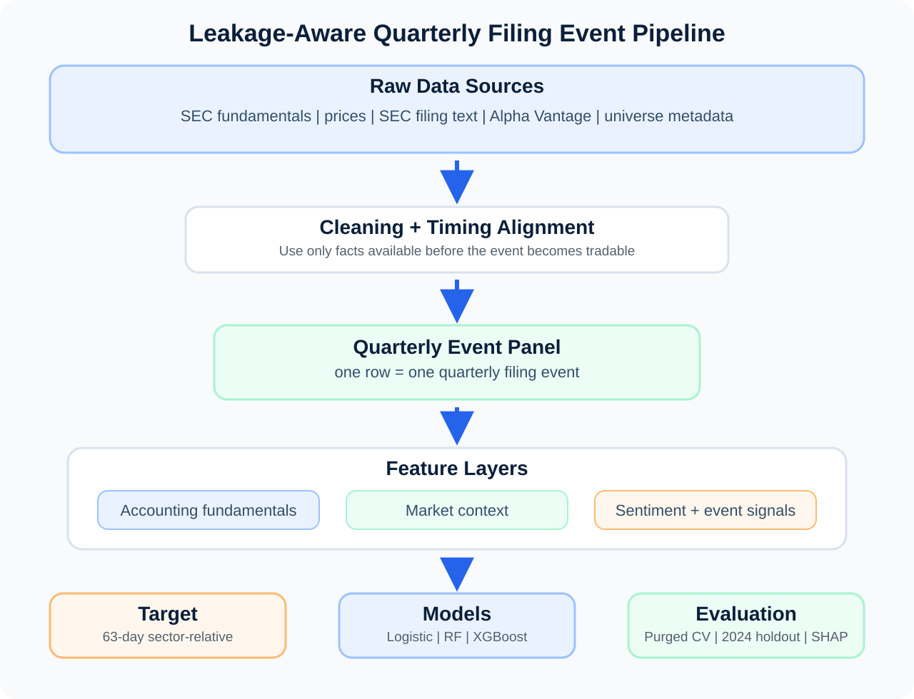
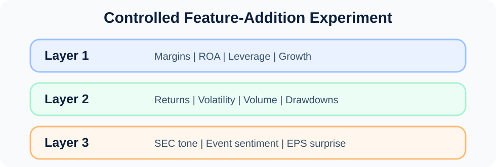
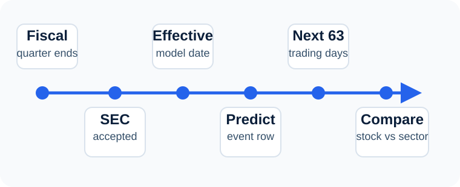
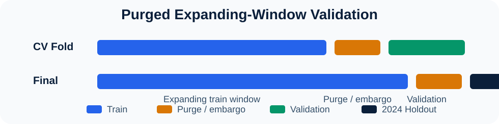
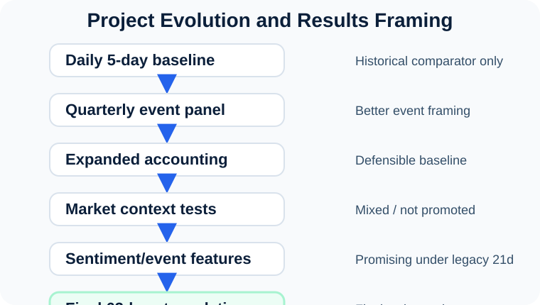
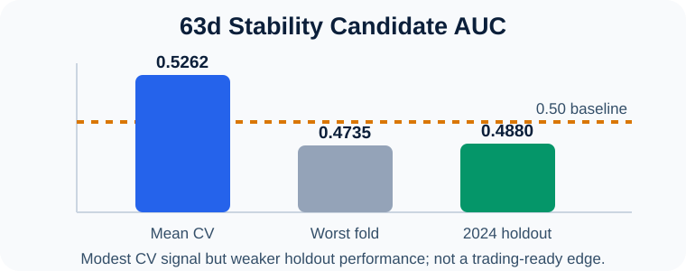
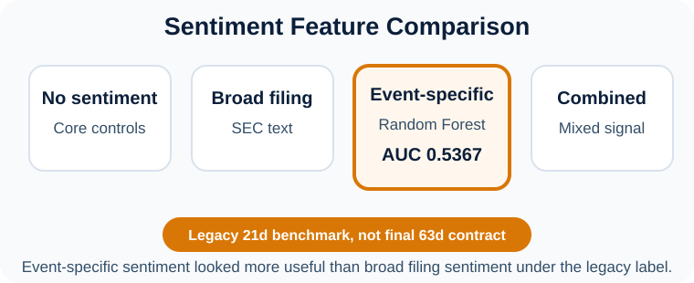

Sentiment-Augmented Quarterly Stock Prediction
A leakage-aware supervised learning pipeline for predicting 63-day sector-relative stock performance after quarterly filing events
Why This Problem Is Difficult
Financial prediction is noisy, time-dependent, and vulnerable to look-ahead bias. A model can appear predictive if it accidentally uses information that would not have been available at the time of prediction.
The project therefore focuses on building a fair event-level experiment, not simply maximizing accuracy.
- No random train/test splits
- No future information in features
- No post-filing facts before they become tradable
- Labels must not overlap validation windows
Leakage Control

Research Question
Can a machine learning model predict whether a company will outperform its sector over the next 63 trading days after a quarterly filing event?
Sub-question: Do sentiment and event-specific features add predictive value beyond fundamentals and market context?
- Fundamentals provide a weak but useful baseline.
- Market context may improve event timing.
- Event-specific sentiment may add incremental signal.
Data Sources
| Source | Role | Examples |
|---|---|---|
| SEC EDGAR | Fundamentals and filings | 10-Q/10-K facts, filing text |
| Market prices | Returns and volatility | Pre-event returns, volatility, volume |
| Alpha Vantage | Earnings metadata | EPS surprise, revisions, analyst count |
| Capital IQ / universe data | Company context | Sector, ticker universe |
| Sentiment model | Text features | Positive, negative, neutral probabilities |
Conclusion
The project does not claim to be a finished trading strategy. It demonstrates a leakage-aware research framework for testing whether financial signals add predictive value around quarterly filing events.
Limitations and Future Work
- Predictive signal is modest and unstable.
- Public financial data requires careful timing alignment.
- SEC filing text can be diluted by boilerplate language.
- Some promising results are from legacy 21-day experiments, not the final 63-day contract.
Next: complete the final 63d rerun, add higher-quality market/accounting data, expand event-specific sentiment, and move toward portfolio construction only after signal stability improves.
Modeling Pipeline

Each prediction is made at the filing-event level using only information available before the event becomes tradable.
Feature Design

Event Timing

Target
1 if stock outperforms its sector benchmark over the next 63 trading days
0 otherwise
Algorithms Compared
Target and Validation

Why it matters: Because the label uses future returns, nearby observations can overlap with validation outcomes. The purge/embargo removes contaminated training rows.
5-fold purged expanding-window cross-validation, fixed 2024 holdout, 5-day embargo, and no random shuffling.
What the Experiments Showed

The strongest checked-in sentiment result comes from a legacy 21-day benchmark. The final project contract uses the stricter 63-day sector-relative target.
Selected Benchmark Evidence


Main Findings
- Quarterly filing events are a better modeling unit than daily stock rows.
- Leakage control is central to the project, not a minor detail.
- Fundamentals created a defensible baseline, but predictive signal was weak.
- Generic market features did not consistently improve performance.
- Event-specific sentiment was more promising than broad filing sentiment.